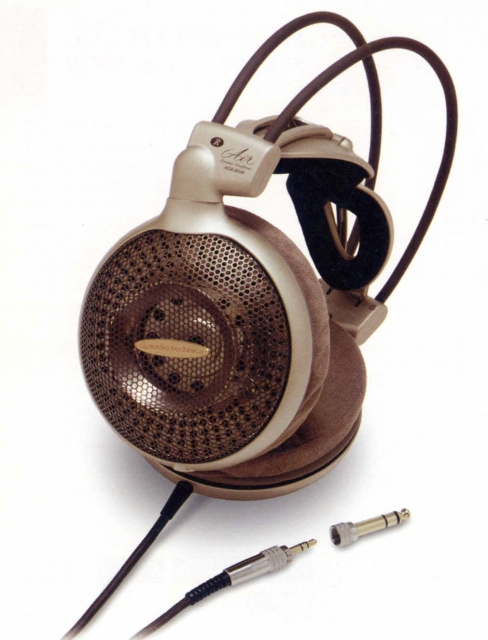
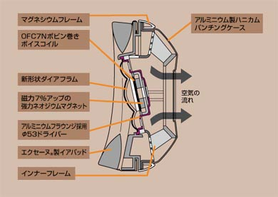

ATH-AD10


■価格 25,000円■型式 オープンエアダイナミック型■振動板 53mm OFC7Nボビン巻きボイスコイル■インピーダンス 38Ω■再生周波数帯域 5-30,000Hz■許容入力 1,000mW■感度 101dB/mW■コード 3m 布巻き/PCOCC ステレオ3.5/6.3mmプラグ■重量 280g（コード含まず）■発売 1999年2月1日■販売終了 ■備考
テクニカのインデックスへ